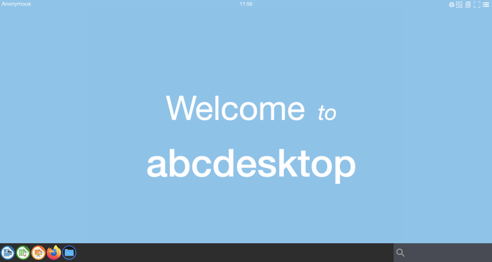
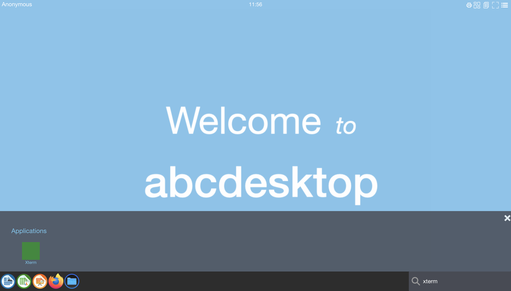
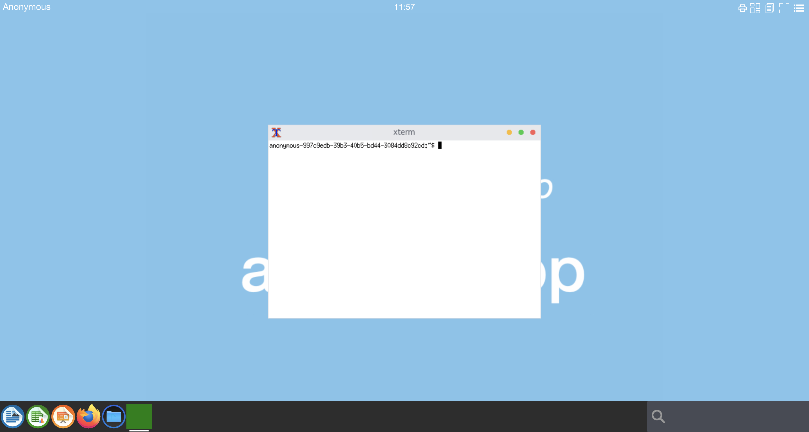

Create a sample application in release 3.0
Requirements
ctrcommand preinstalled .nodejsand npm command preinstalled.dockercommand preinstalled.
Goals
- Create a sample application
xterm. xterm program is a terminal emulator for the X Window System.
git clone application repository
The abcdesktop application repository is https://github.com/abcdesktopio/oc.apps
git clone https://github.com/abcdesktopio/oc.apps.git
cd oc.apps
And install nodejs packages for oc.apps
npm install
Create a sample.json file
abcdesktop uses a json file description to build an application.
Create a sample.json file
{
"tag": "3.0",
"acl": { "permit": [ "all" ] },
"cat": "development",
"icon": "small.svg",
"apkpackage": "xterm",
"keyword": "xterm,shell,cmd",
"launch": "xterm.XTerm",
"name": "Xterm",
"path": "/usr/bin/xterm",
"rules": { "homedir": { "default": true } },
"template": "abcdesktopio/oc.template.alpine.minimal"
}
make a Dockerfile from the sample.json file
make.js is a command line for abcdesktop. make.js read a json file and create a Dockerfile
The make.js options are :
-r 3.0: to build image in abcdesktop 3.0 format-d True: to create aDockerfileas output-f sample.json: file to read as input
npm i argparse npm notice created a lockfile as package-lock.json. You should commit this file. + argparse@2.0.1 added 1 package and audited 1 package in 0.837s found 0 vulnerabilities
node make.js -r 3.0 -d True -f sample.json
Your read on stdout.
Namespace(dockerfile='True', release='3.0', applicationfile='sample.json')
Building image for release=3.0
Read database json file=sample.json
Only one file option to force output to dockerfile=True
opening file sample.json
applist.json entries: 1
{ tag: '3.0',
acl: { permit: [ 'all' ] },
cat: 'development',
icon: 'small.svg',
apkpackage: 'xterm',
keyword: 'xterm,shell,cmd',
launch: 'xterm.XTerm',
name: 'Xterm',
path: '/usr/bin/xterm',
rules: { homedir: { default: true } },
template: 'abcdesktopio/oc.template.alpine.minimal' }
Building xterm.XTerm
Read the Dockerfile
cat Dockerfile
# Dynamic DockerFile application file for abcdesktopio generated by abcdesktopio/oc.apps/make.js
# DO NOT EDIT THIS FILE BY HAND -- YOUR CHANGES WILL BE OVERWRITTEN
ARG TAG=3.0
FROM abcdesktopio/oc.template.alpine.minimal:$TAG
USER root
RUN apk add --no-cache --update xterm
ENV BUSER balloon
LABEL oc.icon="small.svg"
LABEL oc.icondata="PHN2ZyB2ZXJzaW9uPSIxLjEiIHdpZHRoPSI2NCIgaGVpZ2h0PSI2NCIgeG1sbnM9Imh0dHA6Ly93d3cudzMub3JnLzIwMDAvc3ZnIj48cmVjdCB3aWR0aD0iMTAwJSIgaGVpZ2h0PSIxMDAlIiBmaWxsPSJncmVlbiIvPjwvc3ZnPgo="
LABEL oc.keyword="xterm,xterm,shell,cmd"
LABEL oc.cat="development"
LABEL oc.launch="xterm.XTerm"
LABEL oc.template="abcdesktopio/oc.template.alpine.minimal"
LABEL oc.name="Xterm"
LABEL oc.displayname="Xterm"
LABEL oc.path="/usr/bin/xterm"
LABEL oc.type=app
LABEL oc.rules="{\"homedir\":{\"default\":true}}"
LABEL oc.acl="{\"permit\":[\"all\"]}"
RUN if [ -d /usr/share/icons ] && [ -x /composer/safelinks.sh ] && [ -d /usr/share/icons ]; then cd /usr/share/icons; /composer/safelinks.sh; fi
RUN if [ -d /usr/share/pixmaps ] && [ -x /composer/safelinks.sh ] && [ -d /usr/share/pixmaps ]; then cd /usr/share/pixmaps; /composer/safelinks.sh; fi
ENV APPNAME "Xterm"
ENV APPBIN "/usr/bin/xterm"
ENV APP "/usr/bin/xterm"
USER root
RUN mkdir -p /var/secrets/abcdesktop/localaccount && cp /etc/passwd /etc/group /etc/shadow /var/secrets/abcdesktop/localaccount
RUN rm -f /etc/passwd && ln -s /var/secrets/abcdesktop/localaccount/passwd /etc/passwd
RUN rm -f /etc/group && ln -s /var/secrets/abcdesktop/localaccount/group /etc/group
RUN rm -f /etc/shadow && ln -s /var/secrets/abcdesktop/localaccount/shadow /etc/shadow
USER balloon
CMD ["/composer/appli-docker-entrypoint.sh"]
WORKDIR /home/balloon
build the abcsample:3.0 from Dockerfile
docker build -t abcsample:3.0 .
Sending build context to Docker daemon 44.21MB
Step 1/29 : ARG TAG=3.0
Step 2/29 : FROM abcdesktopio/oc.template.alpine.minimal:$TAG
---> 8528ff0674c7
Step 3/29 : USER root
---> Using cache
---> 10372fb6f76c
Step 4/29 : RUN apk add --no-cache --update xterm
---> Using cache
---> f222db3926f1
Step 5/29 : LABEL oc.icon="small.svg"
---> Running in 3303dde31f46
Removing intermediate container 3303dde31f46
---> 2cb2fac76cbd
Step 6/29 : LABEL oc.icondata="PHN2ZyB2ZXJzaW9uPSIxLjEiIHdpZHRoPSI2NCIgaGVpZ2h0PSI2NCIgeG1sbnM9Imh0dHA6Ly93d3cudzMub3JnLzIwMDAvc3ZnIj48cmVjdCB3aWR0aD0iMTAwJSIgaGVpZ2h0PSIxMDAlIiBmaWxsPSJncmVlbiIvPjwvc3ZnPgo="
---> Running in 65170013c043
Removing intermediate container 65170013c043
---> 52af61054ac3
Step 7/29 : LABEL oc.keyword="xterm,xterm,shell,cmd"
---> Running in ad13bedc4b0a
Removing intermediate container ad13bedc4b0a
---> 5bde38f46888
Step 8/29 : LABEL oc.cat="development"
---> Running in 238c24528439
Removing intermediate container 238c24528439
---> 886ede105940
Step 9/29 : LABEL oc.launch="xterm.XTerm"
---> Running in 1b2c45e68c29
Removing intermediate container 1b2c45e68c29
---> cf827822a393
Step 10/29 : LABEL oc.template="abcdesktopio/oc.template.alpine.minimal"
---> Running in 8adfa795a837
Removing intermediate container 8adfa795a837
---> 5e17811c5290
Step 11/29 : LABEL oc.name="Xterm"
---> Running in e2ed34859ca2
Removing intermediate container e2ed34859ca2
---> e3ed08726ea1
Step 12/29 : LABEL oc.displayname="Xterm"
---> Running in 636fa338c00f
Removing intermediate container 636fa338c00f
---> 0c756bf8c322
Step 13/29 : LABEL oc.path="/usr/bin/xterm"
---> Running in 2a7355d27588
Removing intermediate container 2a7355d27588
---> 06ae4c2fdaa7
Step 14/29 : LABEL oc.type=app
---> Running in 0c6f5f1c9d07
Removing intermediate container 0c6f5f1c9d07
---> 4bd3f1462669
Step 15/29 : LABEL oc.rules="{\"homedir\":{\"default\":true}}"
---> Running in 1d836f666a9e
Removing intermediate container 1d836f666a9e
---> 28ed74393046
Step 16/29 : LABEL oc.acl="{\"permit\":[\"all\"]}"
---> Running in 3489fb9b8571
Removing intermediate container 3489fb9b8571
---> 902caf61d44f
Step 17/29 : RUN if [ -d /usr/share/icons ] && [ -x /composer/safelinks.sh ] && [ -d /usr/share/icons ]; then cd /usr/share/icons; /composer/safelinks.sh; fi
---> Running in 0de74bad43c7
Removing intermediate container 0de74bad43c7
---> 720830424aeb
Step 18/29 : RUN if [ -d /usr/share/pixmaps ] && [ -x /composer/safelinks.sh ] && [ -d /usr/share/pixmaps ]; then cd /usr/share/pixmaps; /composer/safelinks.sh; fi
---> Running in 47b9a1b745e1
Removing intermediate container 47b9a1b745e1
---> 9f63628f1cb5
Step 19/29 : ENV APPNAME "Xterm"
---> Running in d175a1ece669
Removing intermediate container d175a1ece669
---> 150c4cfe4aa3
Step 20/29 : ENV APPBIN "/usr/bin/xterm"
---> Running in 997fee55d34e
Removing intermediate container 997fee55d34e
---> 425ac1a6e205
Step 21/29 : ENV APP "/usr/bin/xterm"
---> Running in 53dd44a513fd
Removing intermediate container 53dd44a513fd
---> 7df215f71bec
Step 22/29 : USER root
---> Running in 003691cdc4f2
Removing intermediate container 003691cdc4f2
---> 0af1892ae7ad
Step 23/29 : RUN mkdir -p /var/secrets/abcdesktop/localaccount && cp /etc/passwd /etc/group /etc/shadow /var/secrets/abcdesktop/localaccount
---> Running in 47d3dff0120d
Removing intermediate container 47d3dff0120d
---> bd4bc4ebf2cf
Step 24/29 : RUN rm -f /etc/passwd && ln -s /var/secrets/abcdesktop/localaccount/passwd /etc/passwd
---> Running in 91dfbff4d2d2
Removing intermediate container 91dfbff4d2d2
---> 230d75aceb20
Step 25/29 : RUN rm -f /etc/group && ln -s /var/secrets/abcdesktop/localaccount/group /etc/group
---> Running in 4e0d720f0cfd
Removing intermediate container 4e0d720f0cfd
---> 2545327438db
Step 26/29 : RUN rm -f /etc/shadow && ln -s /var/secrets/abcdesktop/localaccount/shadow /etc/shadow
---> Running in 37770cba900b
Removing intermediate container 37770cba900b
---> 06ba8e872dfb
Step 27/29 : RUN rm -f /etc/gshadow && ln -s /var/secrets/abcdesktop/localaccount/gshadow /etc/gshadow
---> Running in 88f16a8cbe63
Removing intermediate container 88f16a8cbe63
---> 7464bca775cd
Step 28/29 : USER balloon
---> Running in b7ac37070372
Removing intermediate container b7ac37070372
---> e476af17dfbd
Step 29/29 : CMD [ "/composer/appli-docker-entrypoint.sh" ]
---> Running in 05b3b17a1c8c
Removing intermediate container 05b3b17a1c8c
---> e96d24e8088e
Successfully built e96d24e8088e
Successfully tagged abcsample:3.0
export and import abcsample:3.0
abcdesktop is designed to use a private or public image registry. A registry is a mandatory service to manage kubernetes cluster with some nodes.
In this case, we suppose we don't have a registry, and we use the same host to build and run application. We need to offer the registry service manually, and copy container image.
Export the image to OCI image format
docker save abcsample:3.0 -o abcsample.tar
Import abcsample into the namespace k8s.io using ctr
ctr -n k8s.io images import abcsample.tar
unpacking docker.io/library/abcsample:3.0 (sha256:5ea681ec0e79928c15d9972f0ae3adfc197d55bfd27cd6cde8381a523c8ae8c0)...done
put abcsample:3.0 in to abcdesktop
Export the abcsample:3.0 image to OCI format
docker image inspect abcsample:3.0 > abcsample.json
Import the abcsample.json into abcdesktop endpoint /API/manager/image
curl -X PUT -H 'Content-Type: text/javascript' http://localhost:30443/API/manager/image -d @abcsample.json
Return a json document
[
{
"home": null,
"cmd": [
"/composer/appli-docker-entrypoint.sh"
],
"sha_id": "sha256:e96d24e8088ead49f0899498a377de88cf6b8b55f042bfe5dee4cfe385d71fe2",
"id": "abcsample:3.0",
"rules": {
"homedir": {
"default": true
}
},
"acl": {
"permit": [
"all"
]
},
"launch": "xterm.XTerm",
"name": "Xterm",
"icon": "small.svg",
"icondata": "PHN2ZyB2ZXJzaW9uPSIxLjEiIHdpZHRoPSI2NCIgaGVpZ2h0PSI2NCIgeG1sbnM9Imh0dHA6Ly93d3cudzMub3JnLzIwMDAvc3ZnIj48cmVjdCB3aWR0aD0iMTAwJSIgaGVpZ2h0PSIxMDAlIiBmaWxsPSJncmVlbiIvPjwvc3ZnPgo=",
"keyword": "xterm,xterm,shell,cmd",
"uniquerunkey": null,
"cat": "development",
"args": null,
"execmode": null,
"security_opt": null,
"showinview": null,
"displayname": "Xterm",
"mimetype": [],
"path": "/usr/bin/xterm",
"desktopfile": null,
"executablefilename": "xterm",
"usedefaultapplication": null,
"fileextensions": [],
"legacyfileextensions": [],
"host_config": {},
"secrets_requirement": null,
"run_inside_pod": false,
"image_pull_policy": "IfNotPresent",
"image_pull_secrets": null
}
]
Run the new application
Open a web browser and go to abcdesktop service url.
Open a new abcdesktop session.

Look for your new application xterm

Start your new application xterm

The icon of then new application xterm is a green rect. It appears in the dock.
Logoff to free ressources.
You have created your own abcdesktop application, import the image, and start it. To get more details, look at the applist.json it describe all json applications for abcdesktop.
Rebuild all images
To rebuild all application in applist.json, run node make.js -r 3.0
node make.js -r 3.0
This command has create new '.d' files.
$ ls *.d
ls *.d
alpine-2048.d calculator.d drawio.d flare.d hyper.d kturtle.d octave.d remotedesktopmanager.d terminal.d winefile-wine.d youtube.d
apachedirectorystudio.d chess.d edge.d frozen-bubble.d impress.d leocad.d onlyoffice.d rhythmbox.d terminalpod.d winemine-wine.d
astromenace.d chrome.d elementary.terminal.d gcompris.d inkscape.d librecad.d openshift.d robots.d tetravex.d winhelp-wine.d
atom.d chromium.d eog.d gedit.d kalzium.d mahjongg.d pinta.d shotcut.d thunderbird.d winscp-wine.d
base.d citrix.d evince.d gelemental.d kdiamond.d math.d planner.d stellarium.d ubuntu-2048.d wireshark.d
beekeeperstudio.d cloudfoundry.d evolution.d geogebra.d kgeography.d mathwar.d postman.d step.d vice.d writer.d
blender.d cntlm.d file-roller.d gimagereader.d kigo.d minecraft.d putty-unix.d stress.d vlc.d xedit.d
bless.d corsix-th.d filelight.d gimp.d klickety.d mines.d putty-wine.d sublime-text.d vmmacos.d xeyes.d
blobby.d dia.d filezilla.d gnumeric.d klotski.d nautilus.d qelectrotech.d supertux2.d vmrc.d xman.d
brackets.d doom.d firefox-esr.d golly.d konsole.d notepad-wine.d remarkable.d swell-foop.d vmubuntu.d xpad.d
calc.d draw.d firefox.d gretl.d ksquares.d notepadqq.d remmina.d teams.d vscode.d xterm.d
Each .d file is a Dockerfile
Run make to build all applications (it can take more than 2 hours)
make